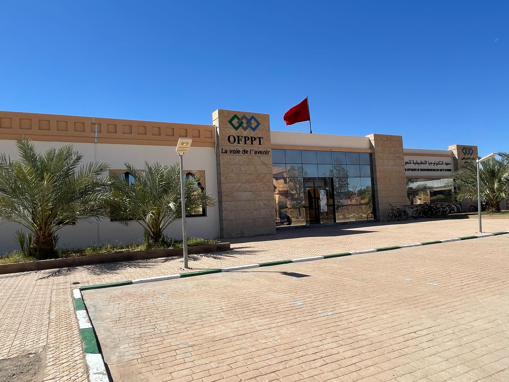
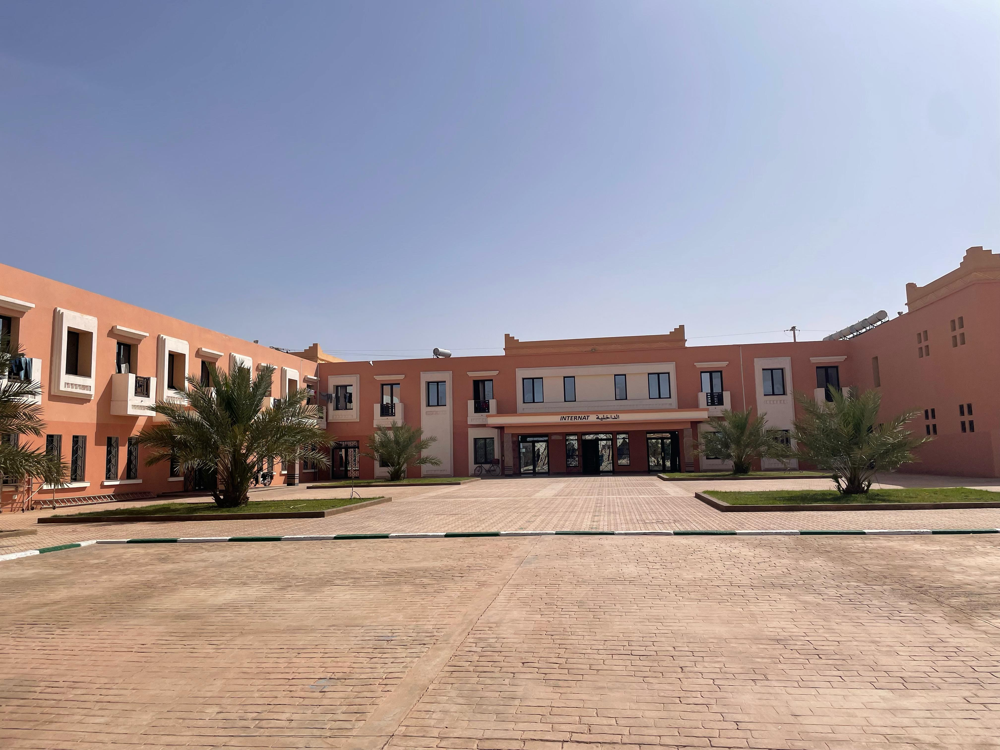

OFPPT Figuig est un établissement de formation professionnelle situé dans la province de Figuig, dans la région de l’Oriental. Il propose des formations adaptées aux besoins socio-économiques locaux, notamment dans les domaines techniques et industriels. OFPPT Figuig constitue un acteur essentiel dans le développement des compétences locales et l’accompagnement des jeunes vers une insertion professionnelle réussie. Notre mission est de proposer une formation de qualité, en adéquation avec les besoins du marché du travail, en mettant l'accent sur la pratique, l’innovation et l’accompagnement personnalisé. Grâce à une équipe pédagogique expérimentée et des infrastructures modernes, nous offrons un environnement propice à l’apprentissage et à l’épanouissement personnel. À l’OFPPT Figuig, nous croyons en la capacité de chaque jeune à bâtir un avenir meilleur à travers le savoir-faire, l’engagement et la volonté de progresser.

L’internat de l’OFPPT offre un cadre de vie structuré et propice à la concentration des stagiaires. Il est divisé en deux espaces distincts :l’un réservé aux filles, et l’autre aux garçons, afin de garantir un environnement respectueux et organisé. Chaque jour, les résidents bénéficient de trois repas complets : le petit-déjeuner, le déjeuner et le dîner, servis à des horaires précis. Ces repas sont pris dans une salle à manger dont l’entretien est assuré par les stagiaires eux-mêmes, répartis en groupes selon un planning établi, favorisant ainsi le sens des responsabilités et la vie en communauté. L’internat dispose également de l’eau chaude, disponible pour les besoins quotidiens des stagiaires, assurant un bon niveau de confort. Pour toute sortie de l’internat, les stagiaires sont tenus de justifier leur déplacement et de signer un registre de sortie, assurant ainsi un suivi rigoureux et une sécurité optimale au sein de l’établissement.